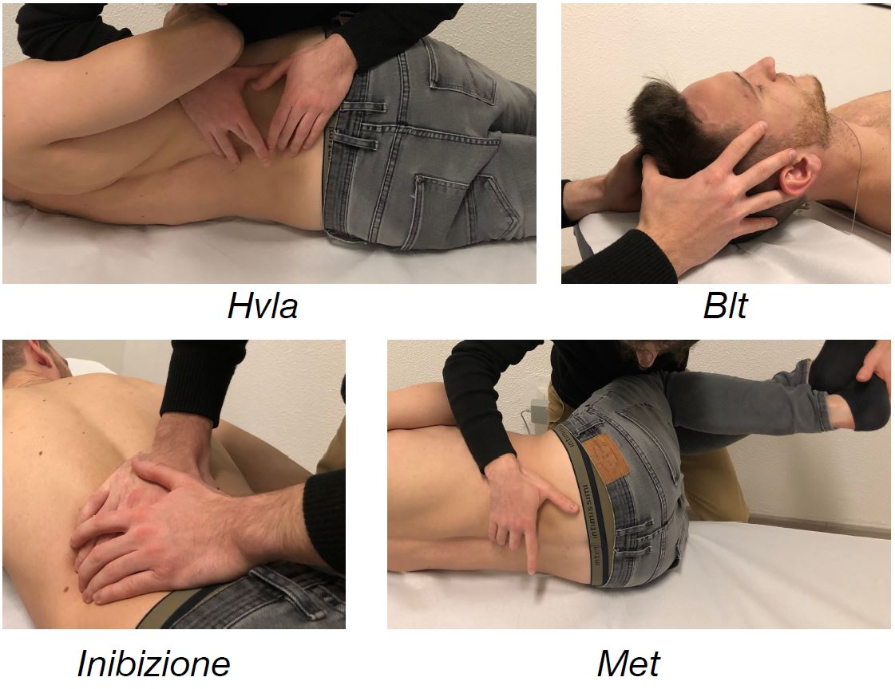

Introduzione
Come spiegato nell’ articolo precedente, l’ osteopatia si occupa principalmente dell’ inquadramento
e della gestione di disturbi funzionali dell’ apparato locomotore e viscerale.
Il trattamento è rivolto al miglioramento delle capacità adattative dell’ organismo e al ripristino
dello stato di salute generale.
Per saperne di più, ripropongo l’ articolo introduttivo:
"Cos'è l'Osteopatia?"
- Come avviene nella pratica la visita osteopatica?
La visita è suddivisa sostanzialmente in 4 momenti:
- Intervista o Anamnesi
- Valutazione differenziale
- Valutazione osteopatica
- Trattamento osteopatico
1. Intervista o Anamnesi
Rappresenta il primo dialogo ufficiale con il paziente. In questa fase vengono raccolti i dati iniziali
quali “generalità” (nome, cognome, luogo di nascita e professione svolta), stato generale di salute e
caratteristiche del sintomo riferito dal paziente, in modo da inquadrare il caso e capire fin da subito
se il problema è gestibile unicamente attraverso l’ approccio osteopatico o se si necessita di un
consulto medico specialistico; ad esempio in caso di sospetta patologia.
Durante l’ intervista, vengono solitamente chieste anche informazioni più generali, che escono dalla
zona di riferimento del sintomo, in modo da iniziare ad indagare sull’ eventuale presenza di
aree di
non adattamento che, creando degli scompensi, possono portare alla generazione del o dei sintomi
riferiti dal paziente.
2. Valutazione differenziale
Segue l’ intervista ed è la prima fase operativa.
In questa valutazione, attraverso dei test,
si cerca di capire se il caso è di competenza specialistica
(Medica), oppure se si tratta unicamente di una problematica funzionale e quindi gestibile dall’
Osteopata.
Gran parte dei test utilizzati sono indirizzati all’ evocazione del sintomo (spesso è un dolore) in
modo da identificare la struttura che genera quel sintomo.
L’ Osteopata non può fare diagnosi medica e non può prescrivere farmaci, di nessun tipo.
3. Valutazione osteopatica
Per l’ Osteopata l’ essenza della visita è ovviamente rappresentata dalla valutazione osteopatica.
In questo momento della visita l’ osteopata, attraverso un approccio esclusivamente manuale, valuta
il paziente nella totalità (dalla testa ai piedi), con modalità molto diverse tra i vari professionisti.
Non esiste infatti un “protocollo di valutazione”. Due pazienti con lo stesso sintomo hanno storie
differenti, abitudini differenti, posture differenti ed è quindi molto probabile che sia differente anche
la causa che scatena il sintomo, seppur sia lo stesso.
L’ osteopata durante la valutazione globale si sofferma in modo dettagliato sulle possibili
aree di
non adattamento (disfunzionali) indagate durante l’ intervista verificando, o meno, le ipotesi iniziali.
Una regione corporea che non lavora in modo armonioso con il resto del corpo genera dei compensi
e tutto il resto del corpo dovrà adattarsi. Se i compensi diventano troppi, o troppo importanti, il
corpo esaurisce la sua capacità di adattamento ed il sintomo ne è il primo risultato.
Una volta identificate le aree disfunzionali quindi, l’ osteopata dovrà “normalizzarle”, riportarle alla
loro normale fisiologia di funzionamento in modo che il corpo possa riacquistare le sue capacità
adattative, indispensabili per una vita libera dal dolore.
[ Semplificando, possiamo affermare che la valutazione differenziale serve a capire “cosa fa male”,
mentre la valutazione osteopatica serve ad individuare la causa del sintomo ovvero il “perché fa
male”. ]
4. Trattamento
Il trattamento osteopatico ha lo scopo di garantire il mantenimento dello stato di salute,
normalizzando le disfunzioni che limitano i processi di autoregolazione innati dell’ organismo.
Gli approcci tecnici utilizzati sono molteplici e assolutamente sicuri e non lesivi.
Vengono scelti dall’ osteopata sulla base delle caratteristiche e della condizione clinica del paziente.
Esempi tecnici:
- Manipolazioni HVLA
- Tecniche ad energia muscolare (MET)
- Tecniche di bilanciamento tensionale (BLT)
- Tecniche di inibizione muscolare
- Ecc..

< Il punto cruciale non è ciò che il medico osteopata può fare per il paziente, bensì ciò che può
fare per “aprire la strada” affinché il paziente possa guarire da sé. >
(Rollin E. Becker D.O.)
Spero di aver chiarito qualche concetto.
Luca Brambilla D.O.
Membro Roi n° 4366